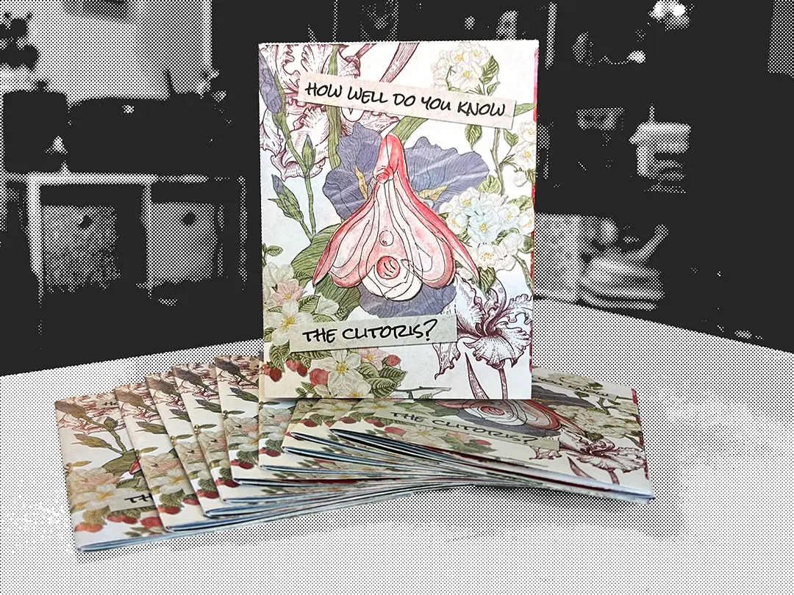
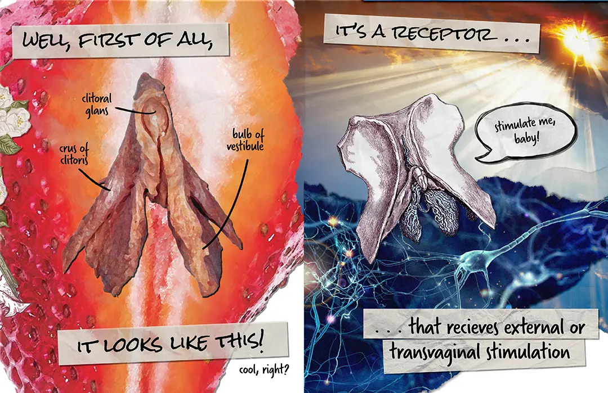
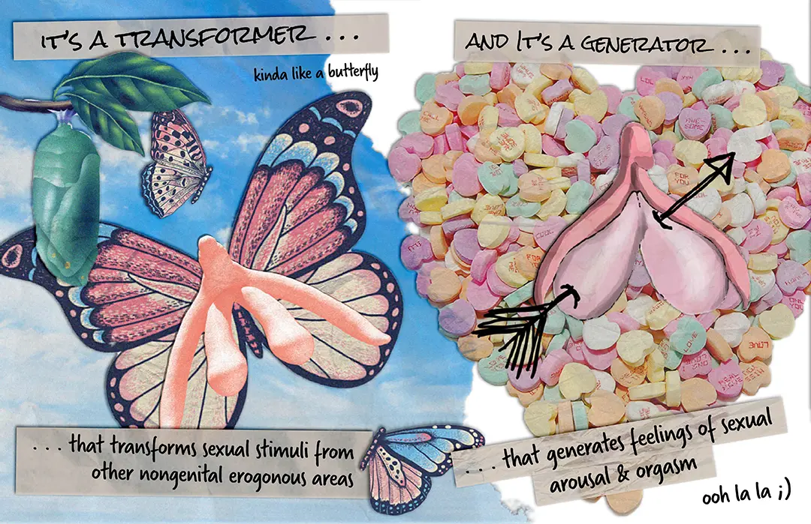
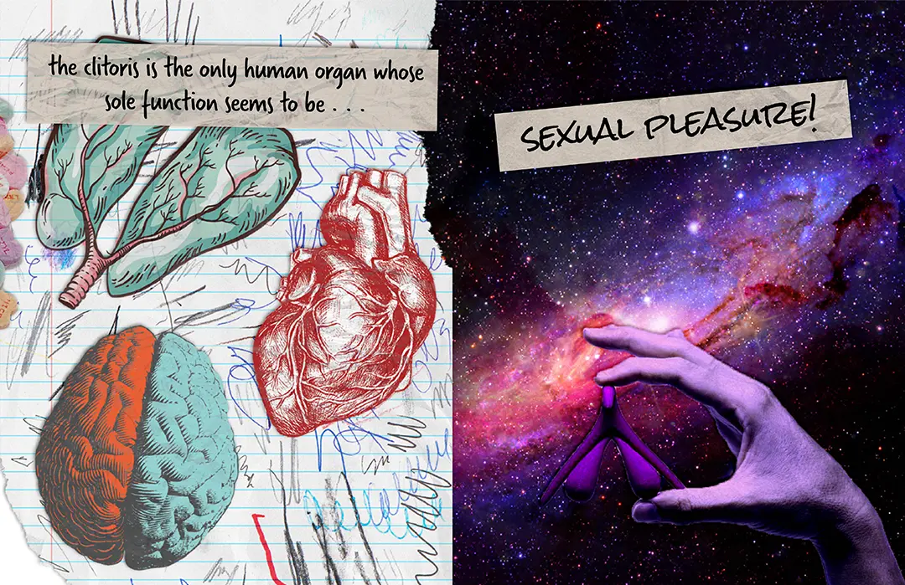
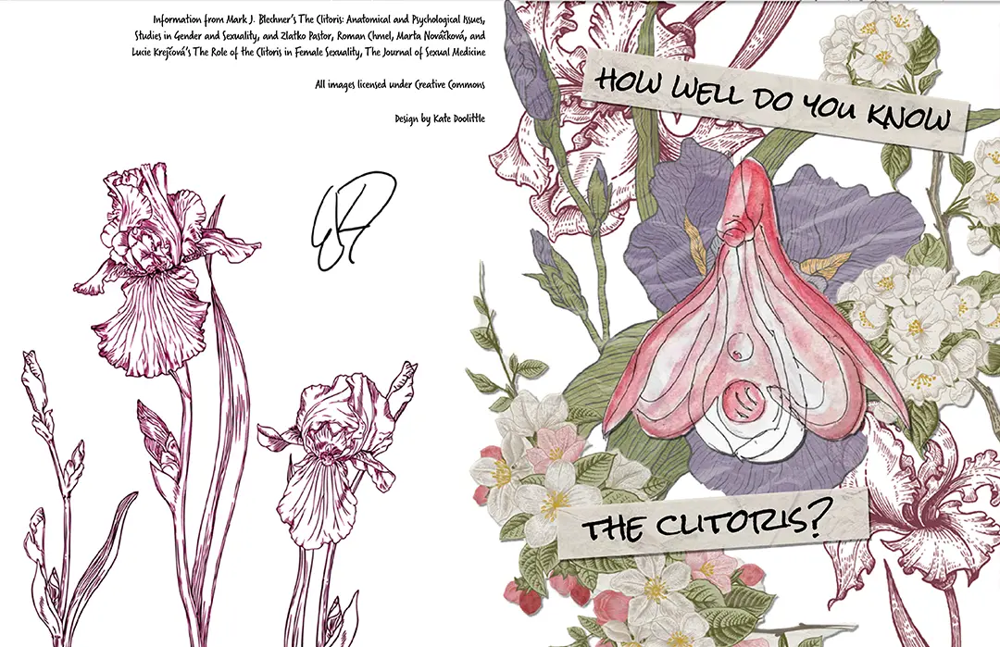

HOW WELL DO YOU KNOW THE CLITORIS?

Well, first of all, it looks like this! Cool, right? It's a receptor... that recieves external or transvaginal stimulation. Stimulate me, baby!

It's a transformer... that transforms sexual stimuli from other nongenital erogenous areas. And it's a generator... that generates feelings of sexual arousal and orgasm. Ooh la la ;)

The clitoris is the only human organ whose sole function seems to be... SEXUAL PLEASURE!


Download a printable copy of the zine
Information from Mark J. Blechner's The Clitoris, Anatomical and Psychological Issues: Studies in Gender and Sexuality, and Zlatko Pastor, Roman Chmel, Marta Nováčková, and Lucie Krejčová's The Role of the Clitoris in Female Sexuality: The Journal of Sexual Medicine. All images licensed under Creative Commons.
Class project, May 2021. Published in Fools Vol. 11, January 2022